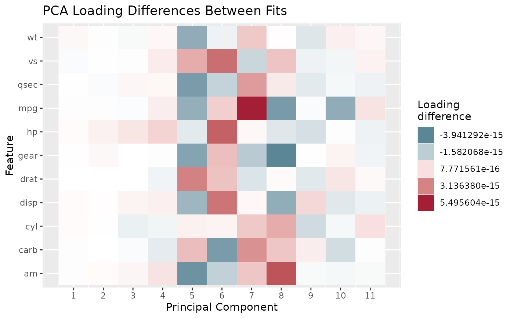

Renders the output of pca_loading_diff as a heatmap (feature
by component), using the same visual language as
pca_feature_loading_heatmap: a diverging fill scale centered
at zero, so components/variables with little sign-aligned change are
white and larger changes in either direction stand out in blue or red.
Usage
pca_loading_diff_heatmap(pca_baseline, pca_comparison, n_components = NULL)
Arguments
- pca_baseline
A prcomp object treated as the reference.
- pca_comparison
A prcomp object to compare against
pca_baseline, fit on the same (or overlapping) variables.
- n_components
Number of leading components to compare. Defaults to
NULL, meaning all components shared by both fits.
Examples
set.seed(1)
baseline <- prcomp(mtcars, center = TRUE, scale. = TRUE)
comparison <- prcomp(mtcars[sample(nrow(mtcars)), ], center = TRUE, scale. = TRUE)
pca_loading_diff_heatmap(baseline, comparison)
